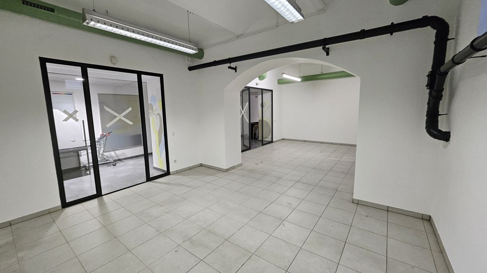
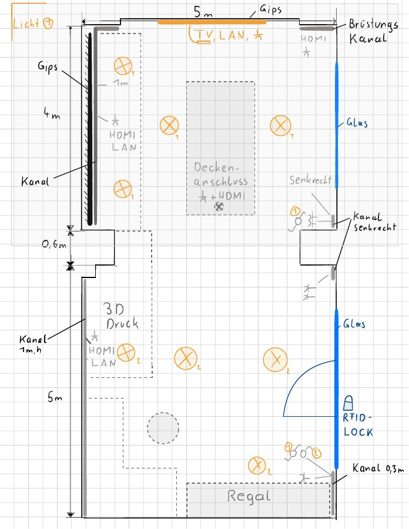
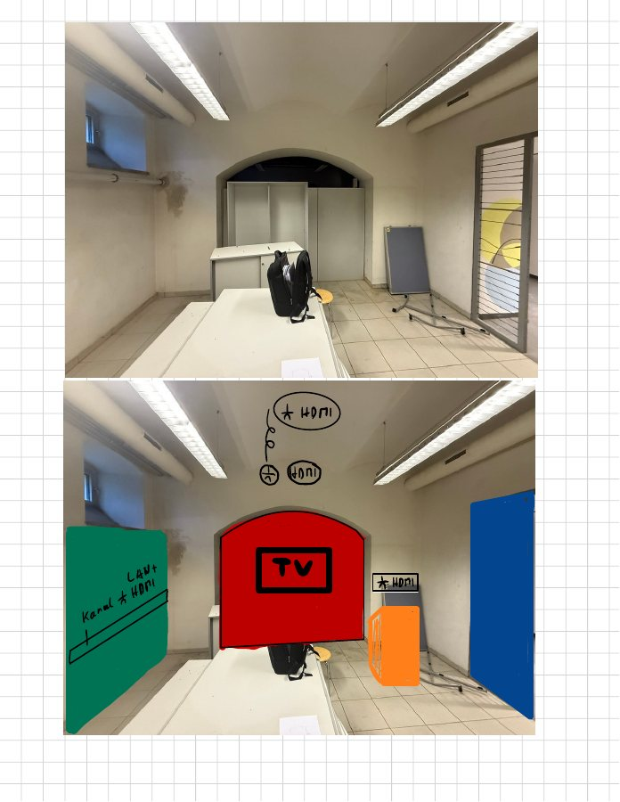
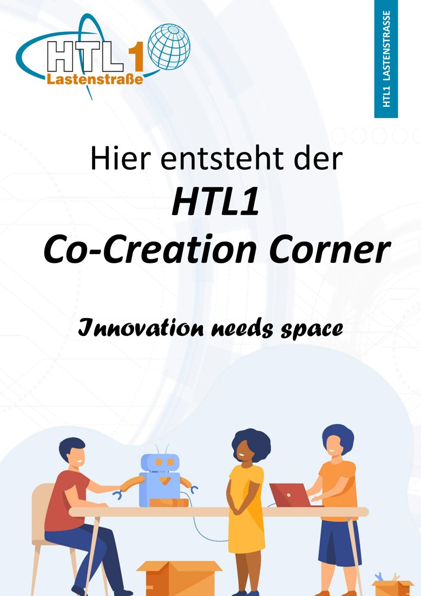
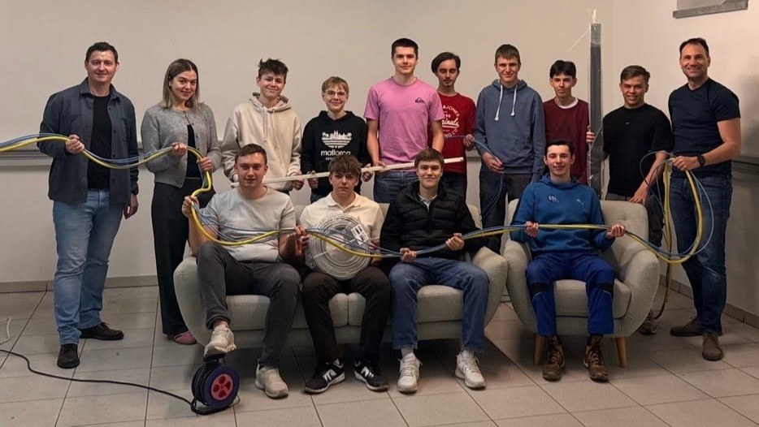
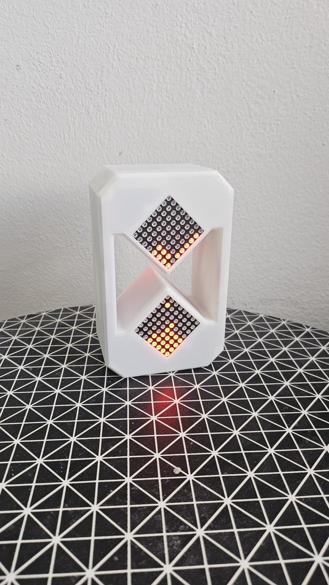

Technik machen, nicht nur darüber reden.
Im Science Club entwickeln Schülerinnen und Schüler aus Elektrotechnik, Mechatronik und Maschinenbau echte Produkte: von der Idee über Elektronik, Software und 3D-Druck bis zum fertigen Bausatz.
Begabungsförderung, die über Schulgrenzen geht
Der Science Club ist eine unverbindliche Übung zur Begabungs- und Begabtenförderung in der Sekundarstufe I und II, mit einem Rahmencurriculum des Bildungsministeriums. Begabte und interessierte Schülerinnen und Schüler tauchen in ein technisch-naturwissenschaftliches Thema ein, forschen, entwickeln und präsentieren ihre Ergebnisse.
Das Besondere sind die Peer Groups: Schülerinnen und Schüler der HTL1 (Sekundarstufe II) arbeiten mit Mittelschülerinnen und Mittelschülern (Sekundarstufe I) zusammen. Die Älteren entwickeln das Projekt und geben ihr Wissen als Peer-Teacher weiter, die Jüngeren bauen unter ihrer Anleitung selbst. So lernen beide: die einen das Erklären, die anderen das Bauen.
Der Science Club der HTL1 ist Teil der Science Club Community Carinthia, gemeinsam mit der HTL Villach und Kärntner Mittelschulen. Unsere Partnerschule in Klagenfurt ist die MS Wölfnitz.
- Kreativität
- Kritisches Denken
- Kommunikation
- Kooperation
Lernen auf Augenhöhe
Echte Projekte statt Übungen
Die Schülerinnen und Schüler sind Entwickler, nicht Teilnehmer. Sie planen, bauen und testen selbstständig, die Lehrer coachen. Das ist näher an Studium und Industrie als am normalen Unterricht.
Peer-Teaching
Wer etwas gebaut hat, kann es auch erklären. Unsere SCC-Mitglieder geben ihr Wissen als Peer-Teacher an Mittelschülerinnen und Mittelschüler weiter, die den Bausatz unter ihrer Anleitung selbst zusammenbauen und verstehen.
Die Co-Creation Corner
Gemeinsam mit den Schülerinnen und Schülern haben wir an der HTL1 einen eigenen Raum geschaffen: selbst geplant, verkabelt und gebaut. Mit 3D-Drucker, Werkzeug, Laptops und Couch gibt er dem Science Club Platz für die nächsten Projekte.
Science-Club-Konzept: DI(FH) Bernd Hollauf, MSc und DI Theodor Kranz, BSc BEd
Innovation needs space
Aus einem leeren Raum an der HTL1 wurde ein Makerspace für den Science Club. Geplant haben ihn die Schülerinnen und Schüler selbst, vom Grundriss mit Arbeitsinseln und 3D-Druck-Ecke bis zur Farbskizze. Danach haben sie ihn mitverkabelt und aufgebaut.






TimeFlow
Die digitale Sanduhr mit Uhr, Wecker, Thermometer, Labyrinth-Spiel und eigener App für LED-Animationen. Als offener Bausatz zum Nachbauen.
Zum Projekt →